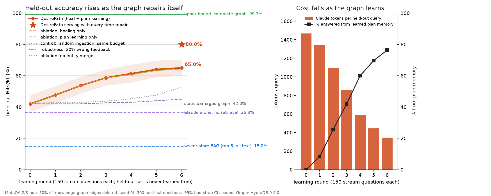

DesirePath
A knowledge graph on HydraDB that repairs itself where users ask. Held-out multi-hop accuracy 42% → 80%, Claude cost per query down 77%. Vector-store RAG on the same questions: 15%.

Try it
Results
What we found
- Healing drives accuracy; plan learning drives cost. Healing alone reaches 64.3%; learned plans add 0.7 points but cut Claude tokens per query by 77%.
- Targeting matters. Random ingestion with the same reading budget reaches only 52.7%, against 65.0% for gap-driven healing.
- Query-time repair (heal from text when traversal hits a gap, then answer) reaches 80.0% overall and lifts never-seen topics from 52.7% to 81.3%.
- Honest about what didn't help: entity merge was neutral (65.3% without it), and path compression gave no measurable speedup because HydraDB already serves a 2–3 hop traversal in about 10 ms.
- Under load: 32 concurrent readers plus a live writer, zero errors.